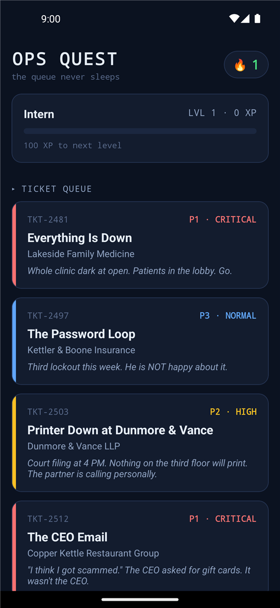
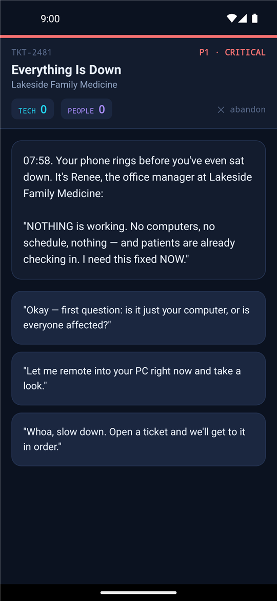
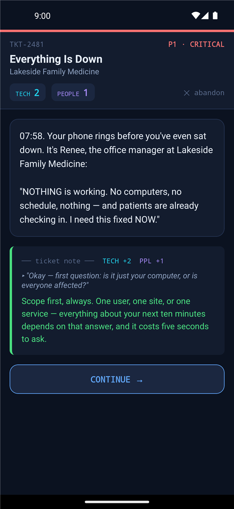
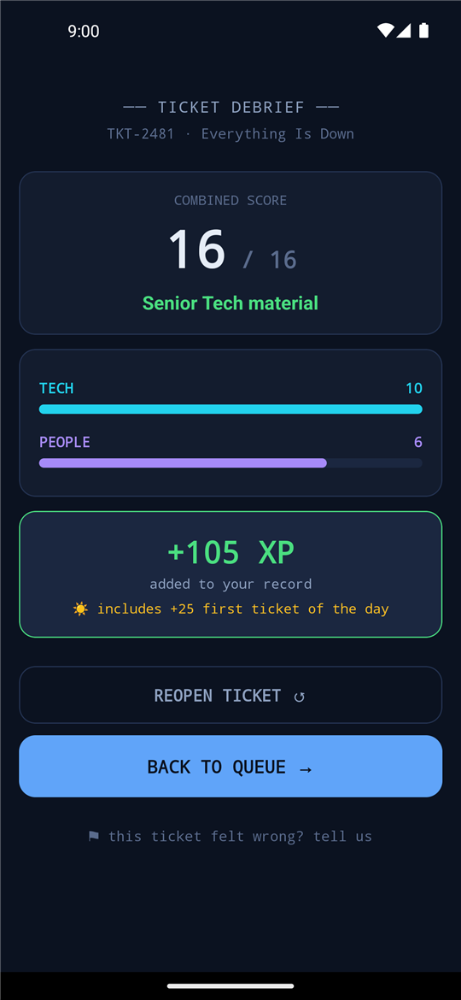
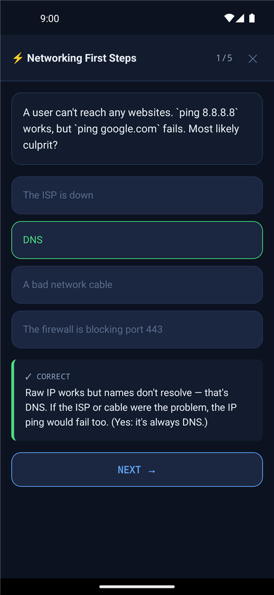

Outage triage
Practice finding the scale of an incident, using monitoring, guiding remote hands, and keeping the customer calm while the fix is underway.
Ticket queue training for real help desk judgment
The IT support simulator you want to answer.
Practice urgent outages, repeat callers, security checks, escalation notes, and client communication in short playable tickets built for MSP and IT support teams.
Email help@spillerstech.us to request access to the public trial and help us qualify OpsQuest for the Play Store launch.
OpsQuest turns help desk training into branching support tickets. Every choice teaches a pattern: scope before fixing, verify before resetting, communicate during outages, and document the close.
Whole clinic dark at open. Patients in the lobby. Go.
Real screens from the current Android build — the ticket queue, a live scenario, the coaching that follows every choice, and the debrief that scores both halves of the job.





Practice finding the scale of an incident, using monitoring, guiding remote hands, and keeping the customer calm while the fix is underway.
Learn why a third password lockout is not just another reset, and how verification, root-cause questions, and follow-up turn frustration into trust.
A court filing at 4 PM, a jammed print queue, and an angry partner on the line — triage two stacked root causes without deleting the work everyone is waiting on.
A gift-card phish from a lookalike CEO. Scope the campaign, contain the compromised mailbox, preserve the evidence, and coach the reporter without shaming her.
Three quiz decks — networking first steps, ticket craft, and security basics — for practice that fits between queue checks.
A streak flame for showing up, levels from Intern to vCIO, and +25 XP for the first ticket you close each day.
OpsQuest scores both sides of the job. It rewards good troubleshooting, but it also trains the soft edges that keep clients steady: plain-English updates, security confidence, ownership, and notes the next tech can trust.
Public trial
OpsQuest is in its first public trial. Early testers help us tune scenarios, catch rough edges, and gather the traction needed for a polished Play Store launch. Email help@spillerstech.us to request access to the public trial and help us qualify OpsQuest for the Play Store launch.